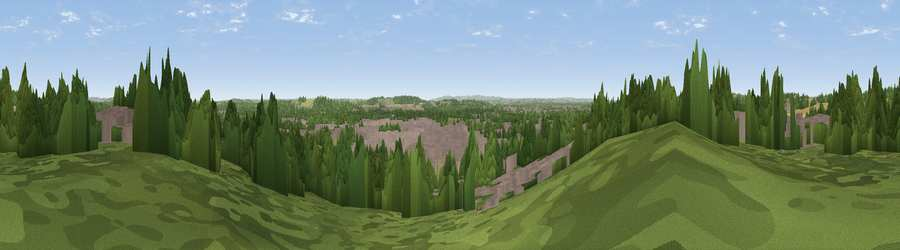

Viewpoint near Attenborough
#28693 in England · top 48% of its area beats it · near AttenboroughWhere it is
The exact computed spot (SK 50675 35575). Click the marker for map links.
The view, rendered

A 360° render of this exact spot computed from the terrain model, tree cover and land cover — summer colours, afternoon light, calibrated against photographs of famous viewpoints. Real trees, hedges and buildings will differ in detail.
The panorama
Grey silhouette: terrain skyline in each direction (720 bearings, Earth curvature and refraction included). Dashed green: skyline with trees (+15 m) and buildings (+8 m) as obstacles. Blue strip: how far the ground is visible on each bearing.
Where the view opens
Wedge length = distance to the farthest visible ground on that bearing (vegetation-aware). Rings at 10, 25 and 50 km.
What fills the view
41% woodland · 37% built-up · 15% grassland · 6% cropland · 1% water
Angular shares of the visible panorama (visual magnitude), not map area. Landscape diversity 0.54 (0–1 Shannon).
Key numbers
More beautiful places nearby
The staircase of upgrades: each row has a higher view potential than everything closer. Driving times are estimates from straight-line distance, calibrated against real road routing — check an actual route before setting out.
| Place | Direction | Drive | Score |
|---|---|---|---|
| Viewpoint near Bramcote | N · 2 km | ~5 min | 49.5 |
| Bramcote Hill | N · 3 km | ~7 min | 56.0 |
| Brands Hill | SE · 3 km | ~8 min | 57.9 |
| Viewpoint near Stanton by Dale | WNW · 4 km | ~9 min | 58.4 |
| Viewpoint near Gotham | SSE · 5 km | ~11 min | 60.1 |
| No Man's Lane | WNW · 5 km | ~11 min | 65.8 |
| Ives Head | S · 19 km | ~32 min | 73.3 |
| Viewpoint near Woodhouse Eaves | S · 21 km | ~35 min | 77.7 |
52.91522, -1.24784 · source: screening · position refined by local search. Computed location — check access rights before visiting.